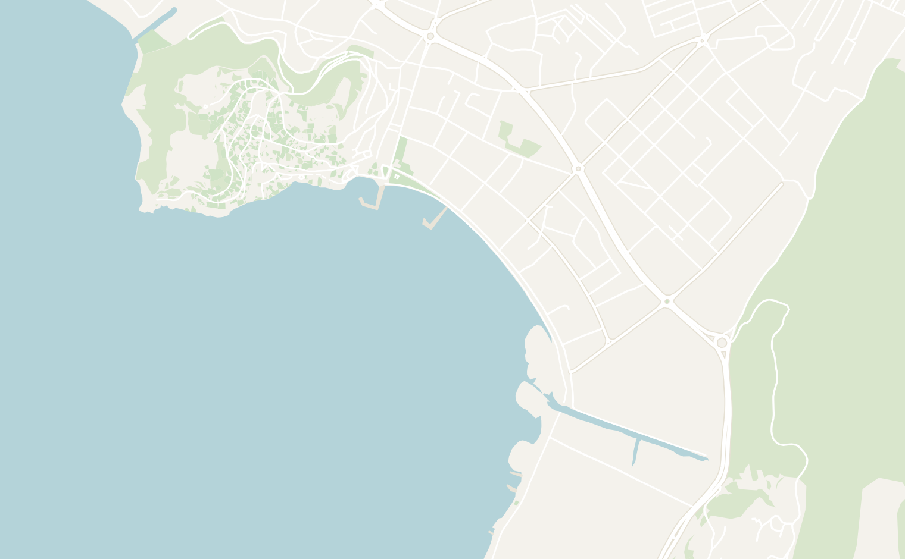
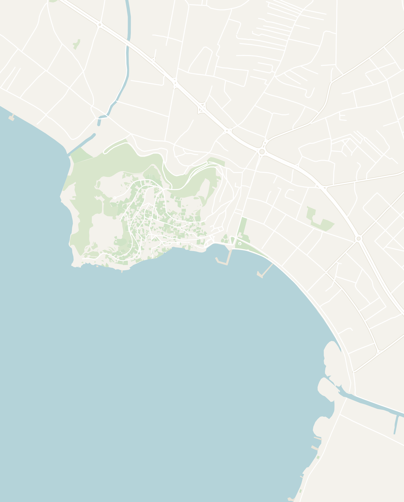

If I had to pick the next big destination in Europe, it would be Lake Ohrid: a picturesque ancient town and a crystal-clear lake in North Macedonia, a country most travelers still overlook. Now is the time to go before it gets overrun with tourists. The lake itself dates back about 1.36 million years, making it one of the oldest in Europe, and it lies on the border of North Macedonia and Albania. The lake's ecosystem is thriving and the clarity of the water absolutely blew me away. The water glowed different shades of blue and green and waves floated along the surface like sheets of glass. The clarity was so impressive that it was almost difficult to see where the shore ended and lake began.


At the top of the lake sits Ohrid, which UNESCO calls one of the oldest human settlements in Europe. The old town is a hill of pine forests and restored Ottoman houses with white walls and dark wood trim and red roofs. Wander the narrow winding lanes of the old town and you'll encounter a castle on top, dozens of 11th- to 14th-century churches and an ancient Greek theater, all overlooking the gorgeous lake below.

Ohrid is growing in popularity every year and gets more tourists than anywhere else in North Macedonia (mostly day-trippers from Albania and Greece). The crowds are never overwhelming the way they can be in France or Italy, but that's changing as the people are catching on. Give Ohrid 2 to 3 full days: one to two for the old town, and a full-day boat tour around the lake with stops at Trpejca, the "Saint-Tropez of Ohrid," and the springs at St. Naum.
Getting to Ohrid
Ohrid is the most popular tourist destination in the country and well-connected to most places in the country. Fly into Skopje, the capital of North Macedonia, Tirana in Albania, or the small airport in Ohrid if you're lucky enough to find a flight. There are also regular buses from the major cities in North Macedonia, Albania, and Montenegro. Most rides in North Macedonia cost $5 to $10, and the country is small enough that no ride should take longer than 4 hours. Balkan Viator is the best resource for bus schedules, though I found it unreliable at times, so confirm the time at the station the day before.
- Rental car — the cheapest and most convenient option is to rent a car for about $25 to $35 a day at the Skopje Airport. With a car, you'll have the flexibility to drive around the lake to destinations like Trpejca and St. Naum on your own schedule.
-
By Bus
- From Skopje — buses leave the Skopje bus station about every hour from 4:30 AM to 9:30 PM and take 3 to 4 hours to the Ohrid bus station, a 20-minute walk from the old town. Tickets are about 800 to 1,000 denars ($15 to $18).
- From Bitola — if you're combining with a trip to Greece, Bitola is just 15 minutes from the Greek border (read my article on the town and border crossing). Direct buses leave the Bitola bus station hourly from 5:30 AM to 9:15 PM, and the ride is about 1.5 hours
- From Krushevo — another stunning destination in the mountains of Macedonia. Take the bus and change in Prilep. You're looking at a 4 hour trip total: Krushevo to Prilep is 2 hours and then Prilep to Ohrid is another 2
- From Albania — combine your trip with the wonderful country of Albania! Buses leave Tirana's East Terminal every 1 to 2 hours and the trip takes about 3 hours, coming in through Struga, the last town on the lake before Ohrid. Tickets are about €15 (or $17)
- Taxis and rideshare — Uber and Bolt don't operate in North Macedonia, so rideshare is limited to local apps called Wizi and Bel Mercedes Taksi. The apps are generally unreliable and don't have many drivers. I would use public transport and negotiate with taxi drivers when needed
Getting around the lake
The town of Ohrid is very walkable. The waterfront and Old Bazaar Street are about 10 minutes on foot from the Upper Gate at the top of the old town. Book your accommodation near the old town and you won't have any trouble getting around.
To get out on the lake, water taxis and tour boats leave regularly from the promenade in front of old town. A full day boat tour is the best way to see the villages down the east shore and the springs at St. Naum. We'll cover that more in A Day Trip Around Lake Ohrid. There are also regular local buses going around the lake.

Ohrid — The Town Itself
Hit the ground running and spend your first day on the lake exploring the old town. Ohrid's old town sits on a single hill above the lake, and you can walk every street of it in a half day, with marble underfoot and a view of the water from almost every corner. The town is absolutely packed with landmarks: the town was once said to have 365 churches, one for every day of the year, which is why it's called the Jerusalem of the Balkans. It is no surprise that both the old town and the lake have been on the UNESCO World Heritage list since 1980.


Double-tap to open in Google Maps
Old Bazaar Street & St. Clement Square


Walk in from the new town and you'll feel the change right away: cross the main road and you're instantly back in a traditional Ottoman old town, with traditional wooden storefronts and a minaret rising over the shops. Ohrid was part of the Ottoman Empire for more than 500 years (only ending in 1912) and the bazaar still carries the influence to this day.
Old Bazaar Street is the main street in the old town that runs uphill from the waterfront to the Upper Gate. It's where you'll find most of the restaurants in town, making the streets around it the best place to stay. The street can get quite crowded during the day, so walk it early in the morning or after dark if you want it to yourself.
At the bottom of the street, where the bazaar meets the lake, is St. Clement of Ohrid Square, one of the prettiest spots in town. It's a beautiful green square of lawns, flower beds and weeping willows, with a statue of St. Clement in the middle and the harbor right in front of it.

A fun fact: the town's signature craft is the Ohrid Pearl, a prized piece of jewelry known all over the Balkans. They aren't natural pearls: they're handmade beads coated in a paste made from the scales of a small fish native to the lake called the plasica. You can still find the shops of the two families who make the originals, who still keep the recipe a secret to this day.
Walking along the Waterfront


When you first step foot on the shores of Lake Ohrid, the first thing you'll notice is how clear and glassy the water is. Right from the shore, you can actually watch schools of small fish, and there are dozens of ducks and black cormorants all along the shore. The lake's ecosystem is thriving with more than 200 of the species living in it that are found nowhere else.
Stroll along the lake in the morning when the lake is very peaceful or at night when the waterfront is buzzing with people. Peak hour is around sunset, when locals and tourists alike come out to watch it. There is a continuous walkway around the water and there are two directions you can head in:
- West to the famous St. John Kaneo Church — follow the wooden boardwalk along the water under the old town's hill to Kaneo Beach and St. John Kaneo Church, about 15 minutes from the main pier. It's the prettiest stretch of the walk through the pine forests and don't miss Labino Vista Point just past the church.
- East into the new town — a more lively option is to start at the main pier below the old town and follow the promenade southeast past the boat operators, a long row of restaurants and the Old Swimming Court. About 20 minutes later, you'll reach Cuba Libre Beach & Bar, a beach bar on Voena Plaža and a good place to end the walk


The best place in town for photography is actually the Old Swimming Court. It was once the town's swimming spot on the lake, popular in the 1960s and '70s, but now sits as a long, half-collapsed dock. From the end of the dock you can see the whole peninsula, encompassing all of old town and the pine forests. Early in the morning, the water is glassy enough to hold a perfect reflection of the old town. It's one of the best views of the town, and I went back multiple times.
St. John Kaneo Church


If you've ever seen a photograph or postcard of Ohrid, it is likely the iconic St. John Kaneo Church, sitting high on a cliff overlooking the wide expanse of the lake. Nobody knows exactly when it was built, but it's thought to date from the 13th century, before the Ottomans arrived. It's named for St. John the Theologian, the author of the Book of Revelation, and for Kaneo, the beach below it.
The church itself is tiny, but the main reason to visit is the view. St. John Kaneo Church is almost completely surrounded by the lake so you'll be able to see boats passing below and the whole shoreline laid out beneath you. There is a viewpoint right above it and a small courtyard around it. Go early, since the tour groups arrive by late morning and can make the small church feel crowded. I visited early in the morning on my last day and had the whole place to myself.

Kaneo is west of the old town, about 15 minutes on foot from the main pier along the waterfront boardwalk. The less popular way is the path down through upper old town through the forest. You'll pass by Samuel's Fortress and go past Plaošnik, home to a church built in 893. We'll discuss key sites in upper old town in a later section below. It's 10 to 15 minutes downhill, and you'll come out right above St. John Kaneo Church.
Labino Vista Point


Just steps away from the busy St. John Kaneo Church, lies a little known viewpoint called Labino Vista Point. I only found it because I walked right past the church and kept going. It ended up being one of the quietest and most peaceful spots along the shores of Ohrid. You'll be treated to some gorgeous views of the lake accompanied by red, purple and white wildflowers, willow trees, and birds singing in the background. There were only 3 - 4 other people there while the old town was packed.

Samuel's Fortress
Towering over the old town is Samuel's Fortress, the walls and towers you can see from everywhere in Ohrid. The fortress dates back to the 4th century BC when the region was ruled by Philip II of Macedon, Alexander the Great's father. It was later named after Tsar Samuel, who ruled a medieval empire from Ohrid and made this hill his stronghold.
His end is the gruesome part (skip this if you're squeamish): in 1014 the Byzantine emperor Basil II captured some 15,000 of his soldiers, blinded 99 of every 100 and left the last man with one eye to lead the rest home. Samuel reportedly died of a heart attack when he saw them. Most of the walls you walk today were restored in 2003.


Come for the view rather than the castle. Walk along the top of the walls and spot the Macedonian flags flying overhead. You'll have a view of old town, with the red roofs falling away below you, the bay of Lake Ohrid and the mountains behind it. It's a 5-minute walk uphill from the Upper Gate (15 to 20 minutes from the lake), and an hour is plenty for the walls. Entry is about 120 denars (around $2), and it closes in the afternoon, so go in the morning while it's cooler.

Exploring the Upper Old Town
While you're up the hill exploring Samuel's Fortress, you'll be in the heart of the old town and there are plenty more sights to see nearby. Everything on the hill is within a 10-minute walk. At this point of my trip, I was pretty churched-out. With a rumored 365 churches in Ohrid, there are more churches than you could ever visit. I would suggest picking a few, since it would take weeks to visit them all. Here are some sights worth considering:
- Old Town View Point — my favorite place on the hill with a great view of the town below and Samuel's fortress in the distance. It's a small lookout two minutes from the Upper Gate, with the red roofs, the bay and the mountains across the lake laid out right below you, and it was the first stop on my walk around the old town

- Upper Gate — the historic entrance to old town through the walls, at the top of Old Bazaar Street. Walk through it and turn around for the view back over the rooftops to the lake. It wasn't the most impressive, but there are many other historic sites nearby


- Ancient Macedonian Theatre of Lychnidos — just inside the Upper Gate lies a theater from the ancient times when Ohrid was the Greek town of Lychnidos. Built around 200 BC, it was used for plays by the Greeks, gladiator fights by the Romans and is still used to this day for the Ohrid Summer Festival which puts on concerts and plays here
- Church of St. Sophia — lower down the hill toward the lake lies the Church of St. Sophia. Dating back to 11th century, it still hosts original frescoes and was once used as a mosque under the Ottomans
- Plaošnik — below the fortress on the way down to Kaneo, is the oldest Slavic monastery in the world. It hosts the Church of St. Clement and St. Panteleimon, one of the first schools of Slavic writing and mosaic floors of birds, deer and peacocks from the 5th century.

Get Lost in the Old Town


To get away from the crowds, step off Old Bazaar Street and get lost in the narrow alleyways. The side streets are quieter and just as pretty, and they wind uphill with a view of the lake at the top of nearly every one. Take your time and wander: every so often you'll stumble onto a great view or a church you've never heard of. That's how I found Labino Vista Point, which I'd never have come across if I'd just followed the crowds.
A Day Trip Around Lake Ohrid
After exploring the Old Town for a couple days, spend a full day venturing off onto the lake and exploring the eastern shore (the real highlight in my opinion). Ohrid is the biggest town on the lake, but it's worth heading out to the quieter, smaller towns along the shore to get a better sense of its beauty and nature. Head south from town, down the east shore toward St. Naum on the Albanian border, and the lake only gets better. A boat tour is by far the best way to see it.
The east shore is where the water is clearest and the villages are quietest, and the boat spends most of the day along it.

The Boat Tour


A day on the water is the one thing you can't skip in Ohrid, and I'd book it before planning anything else. Operators line the promenade of the old town selling a variety of boat trips. There are two general categories of tours:
- Short trips from the promenade — the cheapest option is an hour-long loop of the bay or a water taxi straight to the most famous monastery on the lake: St. Naum. It was cheaper, and fine if you only have half a day. However, the water taxis often have tight schedules and don't allow flexibility for exploring different locations
- Full-day tour — about 8 hours door to door, with lunch, drinks and the pick-up from your accommodation included. You'll be able to more thoroughly explore the towns along the water and stop by secluded spots other tours don't get to visit. At $80–$100, it is much more expensive than the shorter versions. I would highly recommend booking this version to get the most out of your time on the lake
After talking to a handful of operators on the promenade, I booked the full-day tour with Lale Tours, a small family-run operator based in the village of Elshani. They picked me up early in the morning and drove me to the family's house in Elshani, where the tour kicked off down the eastern shore of the lake.
Our captain, Petr, had a great sense of humor, spoke really good English and gave us plenty of background on the lake and on Macedonia. The route runs down the east shore past the Bay of Bones and up to the viewpoint at Trpejca, with a stop at the quiet walled monastery of St. Zaum, and ends at the springs at St. Naum.
Around noon, we went back to St. Zaum for lunch, and I went for a swim while Petr fired up the grill. The water was freezing back in May, and so clear it was hard to tell where the water started and the shore began. Lunch was a traditional Macedonian barbecue: a mixed grill (including the Macedonian classic kebap), a fresh salad and bread.
On the boat ride back, everyone was in high spirits and played a song from their country, and we had a great time while watching the sunset. A perfect way to end one of my favorite days in North Macedonia.
Bay of Bones

The Bay of Bones was our first stop (really more of a quick fly by). It is believed to be one of the earliest human settlements in Europe and today, there is a floating reconstruction of a Bronze Age village on stilts. The village earned the creepy name after scientist found over 6,000 piles of animal bones on the lake bed, along with deer antlers and a lot of broken pottery.
The 24 huts on the platform today were built in 2007 and 2008 as the Museum on Water, along with a Roman fort rebuilt on the hill above. We only passed it on the boat, but you can stop and walk out onto it if you're going down the shore by car or bus. My friends who went gave mixed reviews, since everything you see is a modern reconstruction rather than the real thing.
The Summer Village of Trpejca

The next location is dubbed the "Macedonian Saint Tropez" and spoiler alert: it didn't disappoint! Trpejca is a small fishing village located on the east shore and is known as the most picturesque village on the lake. It has slowly turned into a low-key lakeside town of cottages and small farms where many Macedonians love to spend the summer relaxing
The town is also home to the best viewpoint on the whole lake. A short 10-minute hike from the main shore, the viewpoint sits high above the town with a full view of the shoreline below. The water was some of the clearest I saw on the lake, with a green tint near the shore and deep blue farther out. Our captain Petr said it gets even clearer later in summer once the algae dies off, which was hard to even fathom.


St. Naum Monastery and the Springs

They really saved the best for last on this tour as we pull into our next stop called St. Naum Monastery. Founded in 905, this massive monastery sits on a hill at the south end of the lake, just a few hundred meters shy of the Albanian border. Outside of Ohrid, it is the most visited spot on the lake, and I happened to go on a local holiday for honoring the dead so the church was absolutely packed. Wander around the courtyard into a small church with faded murals and you might catch peacocks wandering the gardens if you're lucky.


Right by St. Naum Monastery was my favorite spot on the whole lake, a small channel with mountain spring water. This was truly the clearest water on the whole lake, clear enough to see the leaves of every plant and little fish swimming on the bottom. In spots it turns an almost see-through blue, I've never seen anything like it. The water seeps up through the white sand at the bottom of the channel from the nearby Lake Prespa into this spring.
Explore the channel by hiring a rowboat at the landing: it was 20€ for the three of us. It felt a bit cheesy at first, but you quickly forget as you're mesmerized by the surrounding scenery. This is an unmissable part of your time in Ohrid.


Where to Eat
The food in Ohrid was satisfying with more western-style restaurants than anywhere else in the country due to the volume of the tourists that flow through. I would highly recommend venturing off and trying the local Balkan staples which are the best value.
You can get a delicious meal for very affordable prices. Breakfast is a burek and an ayran (a salty yogurt drink) from a bakery for about $2, and lunch or dinner is kebap, pljeskavica, or a proper sit-down meal for around $10. For more on these dishes and what else to order, see the food section of my North Macedonia itinerary. Here is where I ate during my time in Ohrid:
- Viva Ksantika kaj Tanja — a traditional family-run Macedonian restaurant in the old town near the main pier, where I stopped for lunch on my way back from St. John Kaneo. I had the polneti piperki which were stuffed peppers, filled with rice and minced meat in a tomato sauce served with a huge dollop of sour cream. The food was rich, filling and tasty. There was also great outdoor seating for enjoying the scenery and people watching

- Pekara Bulevar — a neighborhood bakery on the edge of old town, where I stopped for breakfast almost every day. The guy behind the counter was really friendly, they have a nice variety of pastries and breakfast is only a couple of dollars
- Plate Bistro — a restaurant serving western-style bowls and salads. Not Macedonian at all, but the food was delicious. I ended up getting a Mexican burrito bowl and it was a welcome change after weeks of meat and bread
Where to Stay
Stay in or right next to the old town, so the waterfront and most of the attractions in town are never more than a 10-minute walk. Accommodation options are plentiful and particularly affordable, especially if you choose to stay in Airbnbs or hostels.

Old Town Hostel Ohrid ended up being my favorite hostel in the country. I wasn't expecting a social hostel experience in Ohrid, but I was very pleasantly surprised! Located right off the main square in old town, I was greeted by the owner who was very relaxed and helpful. He helped me navigate the conflicting bus schedules to Krushevo and was very accommodating when I asked for early checkout.
Maybe I got lucky, but the common room fills up every night. I met some really interesting travelers while I was there: a Swiss guy cycling from Switzerland to Türkiye, an Israeli busker, a couple British girls and an American on a career break. Our night ended with celebrating one of the girls' birthday and a big group game of spoons. I only booked one night and wished I had longer.
There are also many affordable Airbnb options on the lake. I booked this Airbnb right across the street from the old town, only a 10-minute walk from the waterfront. The apartment was modern and affordable, with a separate bedroom, a sunroom and fast internet for under $50 a night. The owner, Viktor, was also really helpful and took my laundry the moment I arrived. Great value if you'd rather have your own space.
Explore More